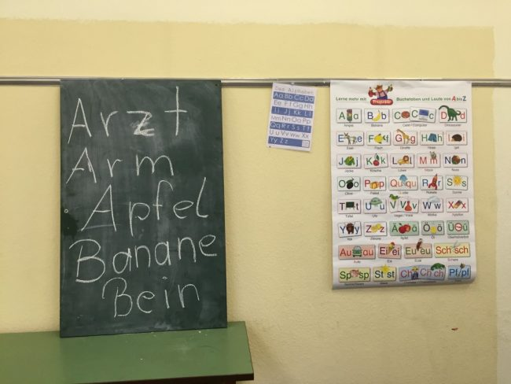
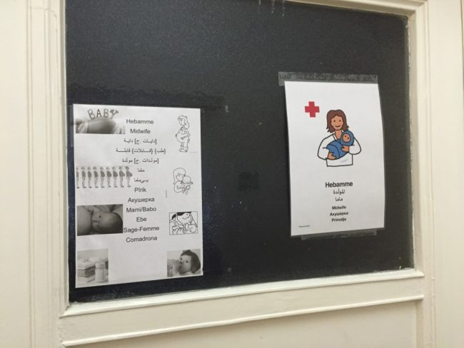
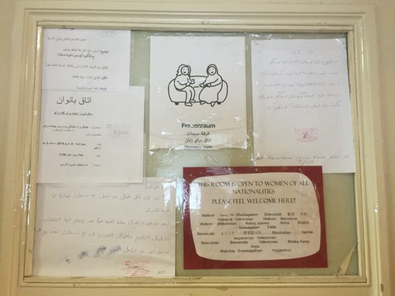
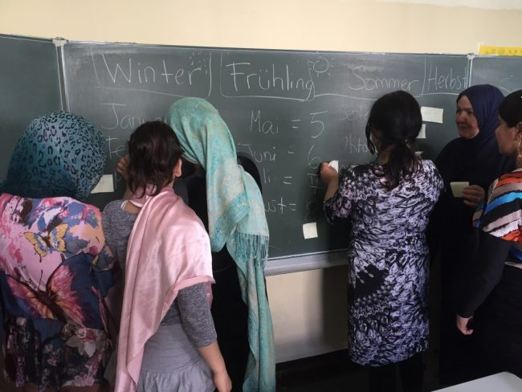
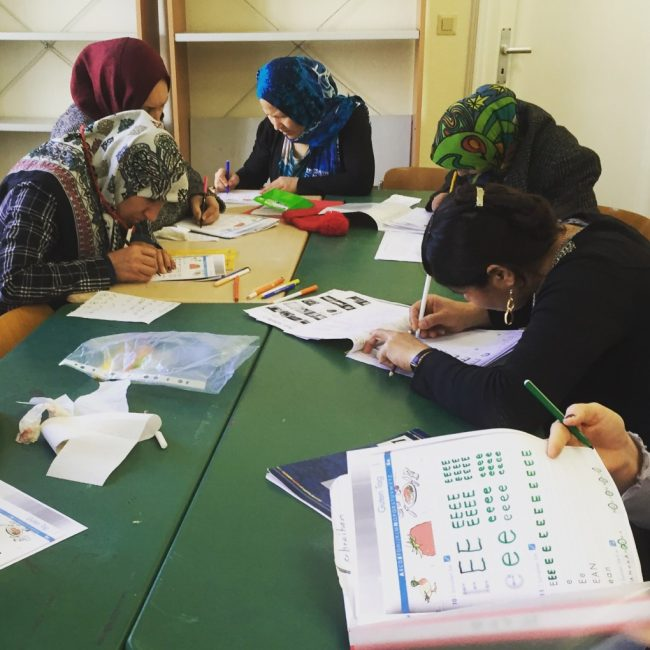
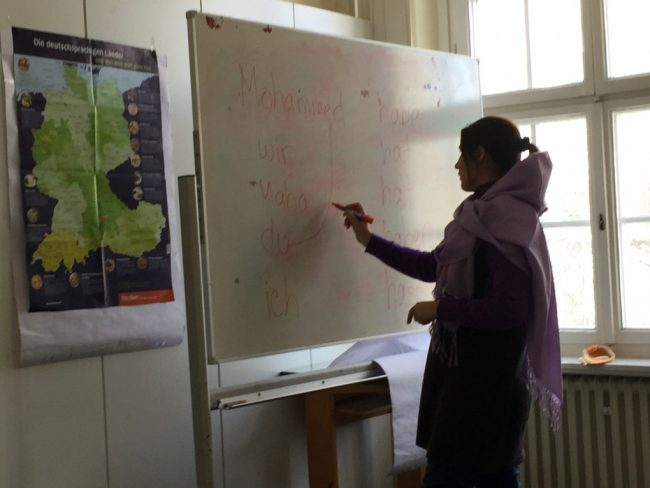
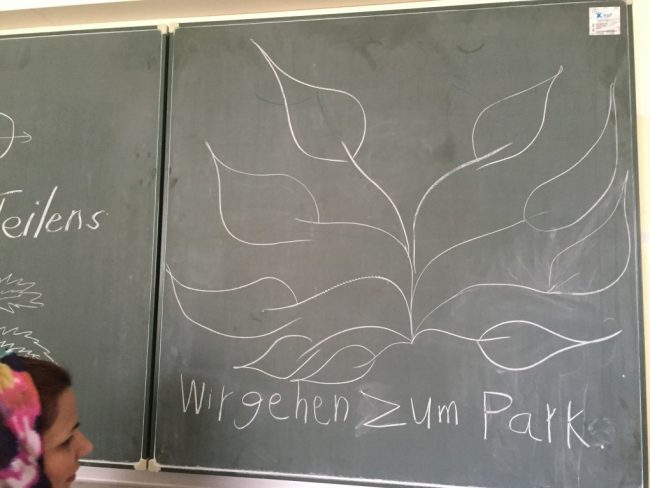

Women Only: The Frauenraum

It’s Thursday at 10:55, and I’m running late. I rush up to the security guards and hand over my ID. Helfer? (“volunteer?”) they ask. Ja, I answer, and wait for them to scribble down my name and give me a number so I can sign out later. I thank them and head inside to the office to sign for the room keys and get my name tag. Then it’s through the foyer and up three floors to room 3092. When breakfast is running late, the right half of the stairwell is still filled by a neat line of people waiting for their turn in the cafeteria. I squeeze by, ruffling the hair of the kids I recognize.
I’m at Rathaus Wilmersdorf, a former city hall building turned refugee home in Berlin, where I teach a literacy class once a week. The home initially opened its doors to 178 refugees in September 2015, following Merkel’s famous “Wir schaffen das” (“We can do it”) declaration that sidestepped the Dublin Regulation and opened up Germany’s borders to thousands of asylum seekers.
Today, over 1400 refugees live in the Rathaus – mostly from Syria, Afghanistan, and Iraq – and there is talk of opening up an adjacent building to house an additional 900. As is the case all over the city, this home simply wouldn’t function without the on-going assistance of volunteers who help out with everything from interpretation and teaching to administrative and kitchen support.

Over the past eight months, Rathaus Wilmersdorf has become somewhat of a success story as far as refugee accommodations in Berlin go. It’s been visited by President Joachim Gauck and American actor Ben Stiller, as well as received significant media praise for its leadership and facilities. One article listed off the home’s impressive amenities, which include medical and midwife services, a laundry room, a hair salon, an internet café, and yes, even our literacy class.
The literacy class, or “AB class” as we call it, does go beyond what many other refugee homes in Berlin offer. But what the article’s authors fail to mention (and are likely unaware of), is that the course comes with a complicated backstory that is indicative of a larger debate surrounding refugees in Germany today.
It all started early this year, after one volunteer noticed that a group of women were not showing up for the German class offered on the home’s fourth floor. These women were mostly Afghan and the majority also illiterate. However, a bit of digging (and a heavy dose of interpretation) revealed that they weren’t avoiding the class because the level was too difficult, as originally suspected. They weren’t going because, in the fourth floor class, there were men present. Or depending on who tells the story, “Because their husbands wouldn’t let them”.

The decision was therefore made to start a new class on the third floor, taught and attended exclusively by women. The class was to be an extension of the adjacent Frauenraum or “women’s room”. At Rathaus Wilmersdorf, the Frauenraum is a standing room open almost daily, so long as there are volunteers present. At the refugee home in former Tempelhof airport, the Frauenraum operates on a weekly project basis, led by a volunteer platform called Give Something Back to Berlin.
Regardless of the format, the concept remains the same: The Frauenraum is a safe place where women can be amongst themselves. In Rathaus Wilmersdorf, they sew, practice German, or just hang out and have a cup of tea. Small children are allowed, but men are forbidden from entering. We’ve even had to throw out a male journalist on occasion. The home’s former director described it as a place where “female residents are enjoying their freedom and unveiling themselves.” I can only assume he meant this both literally and figuratively, as not all the women wear headscarves, but some who do do indeed take them off when in the Frauenraum or during class.
I fell into the role of literacy teacher by way of the Frauenraum, where I started volunteering in January. The class was already up and running but they wanted to offer it on more days and were having trouble finding willing teachers. Other Frauenraum volunteers, I was told, had flatly refused to teach out of principle, scoffing at the idea that a separate class be created when there was a perfectly good one already on offer. This is Germany, after all, a country where men and women are presumably equal and interact on all levels of society. If the husbands had a problem with that, tough. Isn’t it in the best interest of these women that we integrate them into our way of life as quickly as possible?

These days, it is difficult to have a discussion in Germany about refugees that doesn’t include a question about gender. Post-Cologne, it is near impossible. Despite the fact that the attacks on New Year’s Eve were carried out by a more diverse group than originally portrayed in the media, that night’s unfortunate events have marked a turning point in attitudes towards refugees.
One poll showed that, between December 2015 and January 2016 alone, the number of Germans who felt the country couldn’t handle the influx of refugees rose from 46% to 60%. Thirty-three percent stated that Cologne had “fundamentally changed” their opinions about refugees. And the ring-wing Alternative für Deutschland (AfD) party, which initially emerged in opposition to the euro, has placed anti-refugee sentiment at the core of their increasingly popular platform. Their leader has controversially called for the use of firearms against incoming refugees.
This is the same country that was at the forefront of Europe’s refugee response only nine months ago. The same country that led the continent’s discourse on establishing a common European solution. The same country that initiated what became globally lauded as Wilkommenskultur (welcome culture).
So, what’s changed?

When the “refugee crisis” hit Germany last summer, hundreds of residents felt compelled to slather butter on rolls and pass them out to refugees arriving at train stations. This was by all accounts heart-warming and admirable, but it was also the easy part. The conversation we are having now is a more complicated one, one that even the seemingly simple question of whether to offer a female-only literacy class echoes:
What happens next and how might our society change as a result?
One could blame Cologne, but the foundation for this confrontation was laid long before. A staggering 60% of the country is of the opinion that Islam does not belong in Germany. (It is also worth noting that Germans consistently overestimate the number of Muslims living in the country. The real figure, while one of the highest in the EU, is still only 5.8%.)
There is an underlying preconception in Germany, as in many Western countries, that Islam is synonymous with misogyny and a lack of female rights. That “according to their religion, women are nothing” or even more extreme, that “these young men will come and rape our daughters“. This preconception likely stems from a variety of factors: images we see in the media, politicians portraying Muslims as backward or extremist, or current conflicts within the Middle East. An argument heard less often is made by Columbia University Professor Lila Abu-Lughod, who explores the conflation of religion and socioeconomic status. Gender inequality within Muslim majority societies stems mainly from economic inequality, and migrants in Germany have traditionally been low-skilled. Therefore what we may label as clashes due to religion may have stronger roots in poverty and lack of opportunity.
Earlier this year in Berlin, a young teacher went to court because she was denied a teaching post due to her headscarf (the case was thrown out on grounds of the state’s Neutrality Act). More recently in Switzerland, a regional authority ruled that two teenage brothers must shake the hands of their female teachers despite it being against their religious beliefs to touch women they are not related to. Traditionally receiving societies such as Germany are perpetually learning how to manage integration in the face of growing diversity. Unfortunately, we seem insistent on concentrating on how “their values” may threaten “ours”, rather than on what type of society we want to live in together.

To be fair, my own engagement at the Rathaus has not come without challenges. On my first day teaching, I swallowed a lot of frustration as another volunteer and I watched the women turn to their husbands for approval before following us to class. Nur Frauen (“only women”), we tried to communicate to the more skeptical looking of the men with a smile, while I stifled the urge to roll my eyes.
We’ve also heard a host of disturbing stories by way of the interpreters. Rape, abuse, threats of divorce. Some stories are from Afghanistan while others allegedly took place here in Berlin. At times, I am ashamed to find myself relieved that I can’t talk to the women directly about what I’ve heard, for fear it might affect the way I interact with them. For now, our exchanges are limited to topics like telling time and types of fruit – they’re big fans of banana and pineapple – as well as the apparently always shocking and never boring topic of me being a 30 year old woman without a husband or children (some of my students have 6, 7, even 9 children).
But until we’re able to have those more in-depth conversations, I remain convinced that offering a class under imperfect circumstances is better than offering no women’s class at all. For what, I’ve asked myself, will give these women more independence than the ability to navigate the city on their own? And what will give them a better chance of being able to navigate the city on their own than the ability to read and write?

Nothing exhibited this more clearly to me than a few weeks ago, when we held an arts project week for our women. The week consisted of two trips to separate parks so they could learn about various plant types and practice drawing them. The excitement of the women was palpable. They got to have a Middle Eastern picnic, a real treat after months of bland cafeteria fare. They got to pick flowers in the woods to take back to the home. There was laughing, there was dancing, and there were so many selfies.
We later found out through interpreters that, for several of the women, it was their first time in a park without a husband or male relative.
At the end of the week, a local artist took the womens’ drawings and stenciled them onto power boxes near the Rathaus. On the Friday, we took a stroll around the neighborhood together to see them for the first time. The Farsi-speaking volunteer asked the women to point out their drawings and explain why they chose to draw them specifically. “Who drew this?” she asked when we got to the second box, pointing to a beautiful palm tree. “Me,” answered one of our students, “I drew it because it reminds me of home. And if you cut off the head, the whole plant dies.”
– By Sophia Burton
The Frauenraum at Rathaus Wilmersdorf is looking for volunteers. To get involved, sign up at
https://volunteer-planner.org/.
For another take on the headscarf, I recommend watching this Guardian video.
All photos my own.
Hi! I would love to get involved with voluntering at the Frauenraum. Is it still possible to help if I can’t speak German?
Hi Julia! You can help without speaking German. Volunteer-planner.org has an English site and you can find lots of opportunities there (or check out the Give Something Back to Berlin Frauenraum project). Good luck and happy volunteering! – Sophia
What a wonderful story, Sophia!